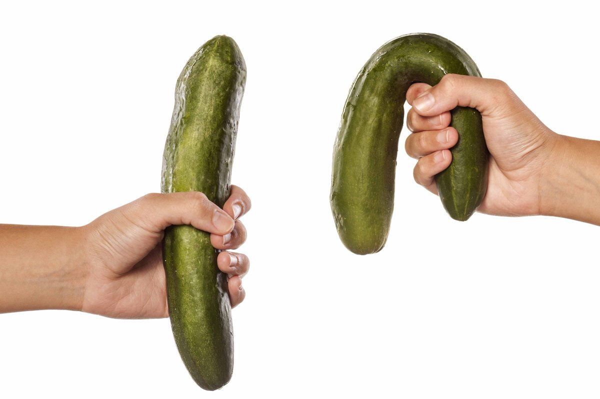

Relationships
Un moyen éprouvé de tenir la queue bien haute, ou comment récupérer une érection à tout âge.
Salut, les gars.
Eh bien, qui a voulu des trucs épicés? Préparez un cahier avec un stylo pour écrire la recette d'une bandaison de pierre et d'un mouchoir si vous êtes soudainement touché par l'histoire d'un mâle dominant de trente-cinq ans dont l’arme de destruction massive a soudainement commencé à mal fonctionner.
Je plaisante, vous n'aurez pas besoin d'un carnet avec un stylo.

Jusqu'à l'âge de 35 ans, je ne pouvais même pas imaginer que les mots 'problème' et 'sexe' pouvaient généralement être dans la même phrase. Mais la vie a un sens de l'humour très spécifique. Et si auparavant je ridiculisais des héros-amants manqués, le destin lui-même se moquait de moi avec le rire le plus diabolique.
Premier échec
Le vendredi, après le travail, nous avons décidé de rencontrer un collègue pour regarder le football. Je n'étais pas fan de ce qui se passait, mais cela ne me dérangeait pas de soutenir l'esprit patriotique, et en même temps, de boire en douce.
La fête était complètement piètre. Afin de sauver en quelque sorte ce soir, j'ai suggéré d'appeler les filles et de se rendre au sauna.
L'esprit d'excitation inutilisé m'a poussé à appeler la plus rebelle de mes copines, qui faisait des manières depuis longtemps, mais par la volonté du destin ce soir elle a été d'accord pour tout.
Les filles, y compris ma Lise, ont rapidement pris de boisson - il n’a pas fallu faire сhanger leur avis. Nous nous sommes souplement déplacés vers une position horizontale. Un prélude à couper le souffle, un bec fabuleux ... tout s'est passé comme sur des roulettes jusqu'à ce que Lisa dise par un ton injonctif: 'Baise-moi enfin!'.
J'ai complètement partagé son désir, mais mon pénis a décidé de faire machine arrière. 'Tout de suite, tout de suite,' dis-je, comme un jeunot pustule qui jouit quand il voit une belle fille.
Voyant mes tentatives infructueuses de filer à Lisa un serpent à moitié mort, la dame du cœur par la voix d'Hitler a demandé: « C'est quoi cette merde » et, quand elle s'est habillée, est partie, ne me donnant pas la chance de lui parler à l'oreille.
Je me sentais dans une fosse avec de la merde. Ce n'était pas seulement une honte, pas seulement un échec, c'était de la vraie merde. Ça ne m'est jamais JAMAIS arrivé.
Cela aurait pu avoir une excuse si cela ne s'était pas reproduit quelques semaines plus tard. Et dans un mois encore et encore une fois. Ça allait pas du tout.
Nerfs? Non, je n'ai pas été nerveux. Alcool? Je n'ai pas été même ivre. Age? J'ai 35 ans! À la recherche d'une réponse qui pourrait en quelque sorte expliquer ce qui s'est passé, je suis allé en ligne. Et honnêtement c'est fou ça.
Les articles de vulgarisation scientifique, comme les révélations des hommes d'expérience dans de telles situations, ont dit d'une seule voix qu'une érection était une chose imprévisible: aujourd'hui vous vous avez la bandaison comme celle d’un cheval, et demain vous êtes déjà dans le club de personnes impuissantes anonymes.
Bien sûr, il peut ne pas se lever une fois pour une cause quelconque, mais si cela s'est passé au moins une fois, attendez la suite ou prenez des mesures urgentes.
Au fait, le Viagra n'a aucun rapport avec des mesures urgentes. Ces déchets synthétiques créent non seulement une dépendance avec une seule pilule, mais vous constituent également une voie incurvée d'abord vers l'impuissance, puis une crise cardiaque.
Pourquoi le pénis ne s'est pas levé
Les causes, apparemment, peuvent être nombreuses. La malfonction érectile (ou l’impuissance) se développe progressivement dans le contexte de:
- la consommation fréquente d'alcool,
- la malnutrition,
- l’éjaculation rare (moins d'une fois tous les 3 jours),
- l'obésité (l'apparition d’un énorme ventre)
- la réduction de la testostérone.
À 30 ans, un gars moyen en France a une testostérone beaucoup plus petit que la normale. Cela affecte l'endurance dans le sexe, la durée du sexe lui-même et sa qualité.
Et si nous mangeons inconsidérément du Viagra et des produits synthétiques similaires, au moins occasionnellement, à l'âge de 40 ans, le pénis deviendra un morceau de peau presque inutile.

Au fait, la testostérone est responsable non seulement du sexe et de la bandaison la plus forte, mais aussi de tout étant mâle. Les hommes qui ressemblent à des petits pains ronds pas cuits avec une troisième taille de poitrine et à moitié chauve - dans 80% des cas ils ont retrouvé cette apparence à cause du manque de testostérone.
Quelque part dans les entrailles du moteur de recherche, il y avait un forum où des hommes de tous bords et tous âges partageaient leurs expériences empiriques.
Si vous excluez toutes les absurdités, de nombreuses personnes ont parlé des comprimés comme le Viagra, mais, contrairement à ce dernier, – naturel, salubre et même utile pour l'organisme entier.
Les experts ont assuré que le produit était éprouvé et fonctionnait vraiment. Si on prend deux gélules, après 15 minutes on obtient l'effet souhaité. Mais il vaut mieux boire la cure complète d'un comprimé par jour pendant 4 à 6 semaines pour élever le tonus du corps entier et ne pas s'inquiéter de la force de bandaison pendant plusieurs années.
J'ai décidé d'aborder le problème avec responsabilité et j'ai immédiatement pris 5 paquets pour la cure.

Au cours de la deuxième semaine, la bandaison de matin, qui n'avait pas été observé après le gueule de bois, a été un événement joyeux. J'avais tellement d'énergie en moi que je pouvais baiser toute une ville, et il n'y avait plus de force à endurer.
Victoire complète
Pour la recherche d'une fille pour la nuit, je suis allé au pub, mais au lieu de l’inconnue magnifique, j'ai rencontré Lise là-bas. La garce qui a tout commencé.
Elle faisait comme si rien ne s'était passé, et j'attendais qu'elle parle de cette nuit, j'étais terriblement nerveux et j’ai bu 10 verres de bière. Après être décoincé, j'ai invité Lise à continuer la soirée avec moi.
Je ne sais pas quels étaient ses plans, mais elle a accepté. L'histoire a été répétée de point en point jusqu'au moment où j'ai dû la baiser.
Cette fois, le pénis n'est pas tombé, il est devenu un piquet, malgré une intoxication sérieuse et la peur de la défaite, qui a disparu après le premier orgasme de Lise.
Je n'ai pas eu un marathon sexuel aussi orageux, humide et long depuis longtemps. Tout, comme promis par les hommes du forum: contrôle de l'éjaculation, longue bandaison, endurance de bovin – la testostérone fouettée de toutes les fissures.

Ce fut une victoire complète et, bien sûr, pas une victoire unique. Depuis que j'ai pris la cure de , plus de six mois se sont écoulés. Pendant ce temps, il n'y a eu aucun raté, quel que soit l'état dans lequel je me trouve.
Où trouver
Maintenant, la partie la plus intéressante. La rumeur veut que la demande pour ces comprimés augmente en un clin d'œil. À cet égard, il y a deux nouvelles. Une nouvelle mauvaise - dans quelques mois, le prix va fortement augmenter. Une bonne nouvelle - jusqu'à 30.12.2019 sur le site officiel du fabricant de , vous pouvez obtenir la cure complète au prix d'un paquet. Je vous recommande vivement de vous approvisionner pour ne pas vous'en mordre les doigts.
J'ai entendu parler de ce supplément beaucoup de fois. J’ai peur de l'essayer moi-même - n'arrive-t-il pas que le pénis tombe alors complètement
nous vivons au 21ème siècle, mec! tout a été testé pendant longtemps naturellement et un milliard de fois! Enfin, je m’en fous) je prends ce truc - ça marche à 200%
fuck, je cherche depuis déjà un an!!! Je l'ai pris une fois - c'est une chose irremplaçable, un complexe de vitamines dans une bouteille. La vigueur est irréaliste et la bandaison est comme à 15 ans! Merci pour l'article!
J'ai récemment commandé un paquet de pour le tonus général, voyons ce que ça donne.
c’est une grande chose))) ma femme convulse du sexe, je peux le faire trois fois par nuit sans problème.
c’est un bon article! Je sais que vous ne conseillez pas la merde, je prends 5 paquets à la fois. C'est vraiment très bon marché en soldes
c’est une chose enchanteresse, je baise pendant deux heures jusqu'à ce que je m'endors de plaisir)))
avant, cette chose n'était accessible que sur des sites américains, maintenant, vous voyez, nos gens sont devenus intéressés)) il est grand temps enfin